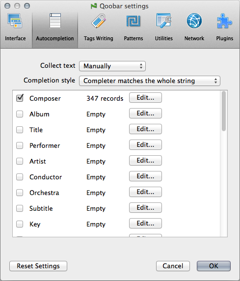

Autocompletion

- Collect text - choose automatic / manual text collecting. See also Autocompletion
- Completion style - here you can choose whether completion matches the whole string or just the last word in it.
- The table below: switch on/off autocompletion for different tag types and edit lists of variants.
© 2009-2015 Alex Novichkov